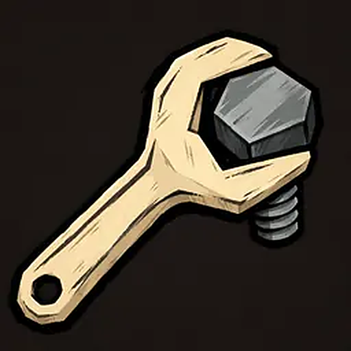

1
Baixe e extraia
Feche o jogo. Clique em Baixar instalador da DLL e extraia o ZIP para qualquer pasta.

Desbloquear QPSJá instalou o mod pela Steam Workshop? Baixe somente o complemento para liberar as opções de FPS no Don't Starve Together.
Windows 64 bits · ZIP pequeno (~220 KB) · Instalação manual ou com script
Prefere separado? Baixar dinput8.dll Baixar dst_fps.ini
A Steam Workshop instala o mod, mas não instala a DLL na pasta bin64 do jogo. Para desbloquear o FPS, baixe o complemento pelo botão acima e siga as instruções abaixo.
Se você já assinou o mod pela Workshop, não precisa instalá-lo duas vezes.
Sem comandos: baixe, extraia e execute. O instalador não duplica o mod e não altera seus saves.
Feche o jogo. Clique em Baixar instalador da DLL e extraia o ZIP para qualquer pasta.
Abra a pasta extraída Desbloquear QPS e execute INSTALAR DLL.bat. Confirme a permissão do Windows, se solicitada. Não precisa digitar comandos.
Ative Desbloquear QPS em Mods de Cliente, aplique e escolha o limite de FPS nas configurações.
C:\Program Files (x86)\Steam\steamapps\common\Don't Starve Together\bin64Seu jogo está em outra unidade? Abra Steam → Biblioteca → Don't Starve Together → Propriedades → Arquivos instalados → Procurar e entre na subpasta bin64.
Para quem prefere instalar tudo manualmente ou quer conferir os arquivos técnicos.
Mod, DLL, instalador, código-fonte e documentação em um só ZIP.
Baixar pacote completoHistórico, licenças, novidades e suporte no repositório público.
Abrir projeto no GitHubJá existe uma dinput8.dll? Não substitua sem identificar a origem e fazer backup: ela pode pertencer a outro complemento. O ZIP inclui um instalador opcional que detecta conflitos.
Meu monitor tem 144 Hz. Posso selecionar 240 FPS? Sim, mas o monitor continua exibindo até 144 atualizações completas por segundo. O FPS real depende do hardware, e desativar a sincronização pode gerar tearing.
Funciona em servidores? É um mod de cliente, sem instalação no servidor. O complemento nativo distribuído é para Windows 64 bits.
Não quero instalar manualmente. O ZIP inclui instruções e o script tools/instalar_local.ps1, que permite conferir os arquivos antes de instalar, sem duplicar o mod.
Precisa de mais detalhes? Leia o guia completo em português.